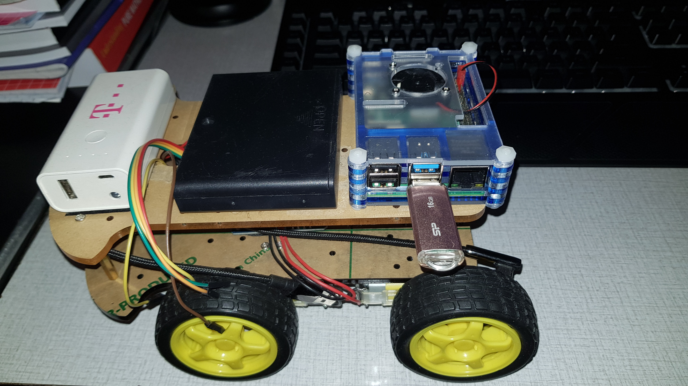
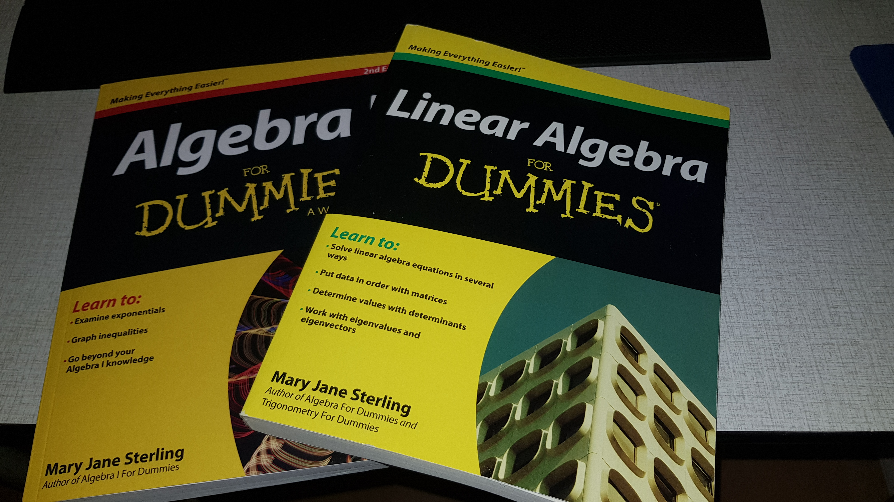

Informatie over myzelf
Ik ben Vinayak, ik ben 19 jaar oud. Ik doe 2 jaar lang
applicatie ontwikkelaar opleiding. Ik ben iemand die graag van uitdaging hou en om nieuwe dingen te leren.
Wiskunde, programmeren en nieuwe onderwerpen leren van wetenschappelijke vakken vind ik heel erg leuk en
interesant. Wiskunde doe ik graag in mijn vrije tijd, het is één van mijn favoriete hobbies. Ik heb thuis,
bij mijn bureau heel veel wiskunde boeken die ik gebruik en dit is wel leuk om te leren en oefenen, maar het is ook
voor het voorbereiden van mijn volgende opleiding, toegepaste wiskunde. Mijn ambitie is om een wiskunde leraar
te worden. Misschien ook iets richting de natuurkunde, biologie en scheikunde kant, waar ik daar wat kan verdiepen
en waar ik nieuwe stoffen kan leren of ook een beroep daaraan doen misschien.
Van mijn stage heb ik ook wat interesants geleerd,
waar ik ook iets mee kan doen voor later in de toekomst om iets nieuws uit te proberen.
Het werken met kotlin, java, gcode en met raspberry pi.